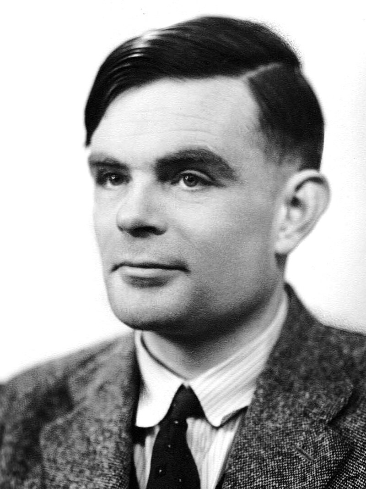

제2차 세계대전. 영국 블레츨리 파크에서 독일군의 암호기계 에니그마를 수학으로 풀어낸 팀 한가운데에 튜링이 있었습니다. 전쟁이 끝나자 그는 계산기로 어디까지 할 수 있을까에 푹 빠집니다.
1950년, 그는 『Mind』라는 철학 잡지에 짧은 글 한 편을 싣습니다. 제목은 「계산 기계와 지능」. 이때만 해도 ‘AI’라는 단어조차 없던 시절이었어요 — 그 말은 6년 뒤에야 한 학자들 모임에서 처음 만들어집니다.
